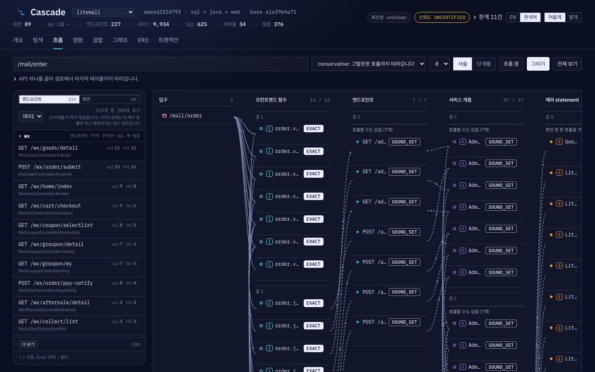
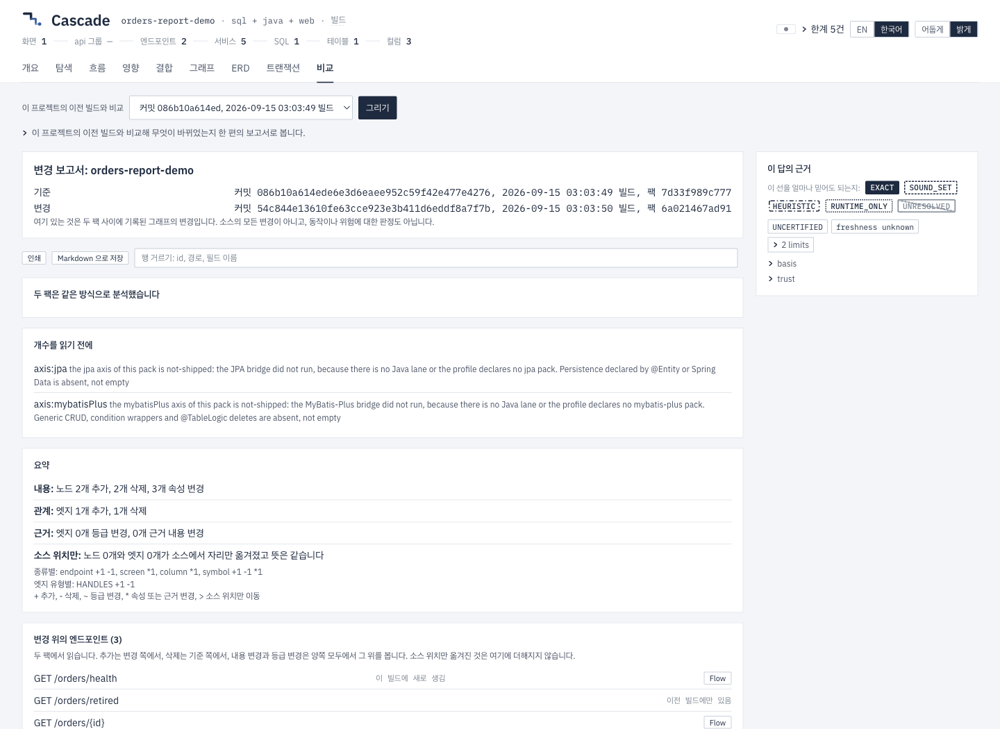

ALEXSOFT INSIGHTS
DB부터 화면까지, 코드 변경의 영향을 따라가는 Cascade
코드를 고친 곳은 알지만 어디까지 확인해야 할지는 쉽게 보이지 않습니다. Cascade를 만들며 DB 컬럼부터 화면까지 관계를 따라가고, 변경 영향의 근거와 한계를 함께 읽을 수 있도록 다듬고 있습니다.

주문 상태를 저장하는 DB 컬럼의 길이를 늘린다고 해보겠습니다. 테이블 정의에서 수정할 곳을 찾는 일은 어렵지 않습니다. 그런데 수정을 끝내고 나면 다른 질문이 남습니다.
이 값을 읽는 코드는 어디에 있고, 어느 화면까지 다시 확인해야 할까요?
컬럼 이름을 검색하면 데이터를 읽고 쓰는 SQL은 찾을 수 있습니다. 그 SQL을 부르는 서버 코드를 따라가고, 서버에 요청을 보내는 화면도 찾아야 합니다. 코드를 고친 사람에게는 익숙한 연결이라도, 검토하는 사람이 같은 흐름을 이해하려면 다시 소스를 열어봐야 합니다. 변경된 파일 목록만으로는 이 범위가 잘 드러나지 않습니다.
제가 만들고 있는 Cascade는 이 연결을 살펴보는 도구입니다. DB 컬럼에서 SQL과 서버 코드를 거쳐 화면까지, 반대로 화면에서 데이터가 있는 곳까지 따라갈 수 있도록 소스의 관계를 모읍니다. 그 사이에는 화면이 서버에 작업을 요청하는 창구인 API가 있습니다. ALEXSOFT의 공개 오픈소스 프로젝트로 개발하고 있습니다.
연결된 선에도 근거가 필요합니다
프로그램을 구성하는 요소와 그 사이의 관계를 모으면 하나의 지도가 됩니다. Cascade에서는 이것을 변경 영향 지식 그래프라고 부릅니다. 이름은 조금 거창하지만, 알고 싶은 것은 구체적입니다. 이 컬럼을 읽는 SQL은 무엇이고, 그 SQL을 실행하는 기능과 사용자 화면은 어디인지입니다.
현재는 Java Spring과 MyBatis 계열의 서버, DB 테이블 정의, JavaScript·TypeScript로 작성한 웹 코드와 Vue·React의 화면 경로 등을 읽습니다. 소스를 실행하지 않고 연결을 찾는 정적 분석이 바탕입니다.
여기서 선이 이어져 있다는 사실만으로는 부족합니다. 소스에 직접 선언된 관계도 있고, 실행할 수 있는 여러 후보 중 하나인 관계도 있습니다. 둘을 똑같이 그리면 화면을 보는 사람은 모두 확인된 호출이라고 받아들이기 쉽습니다.
그래서 Cascade는 연결마다 근거 등급을 붙입니다. 소스에서 확인한 것인지, 가능한 후보인지, 실행 기록에서만 관측한 것인지 구분하고, 분석하지 못한 범위도 함께 알립니다. Kotlin 소스나 Angular·Svelte 라우터, 실행할 때 조립되는 일부 호출 관계처럼 아직 읽지 못하는 부분이 있습니다.
이 지도에서 어떤 화면까지 길이 이어진다는 것은 그곳을 확인할 이유가 있다는 뜻입니다. 운영 중 그 경로가 반드시 실행된다거나, 이번 수정으로 장애가 생긴다는 판정은 아닙니다. 반대로 선이 없다고 해서 영향도 없다고 단정할 수는 없습니다. 분석이 어디까지 읽었는지부터 봐야 합니다.
변경 목록을 검토할 수 있는 보고서로
최근에는 변경 전후를 비교하는 부분을 다듬었습니다. 기존에도 두 시점의 분석 결과를 비교할 수 있었지만, 같은 이름을 가진 요소 안에서 내용이 달라진 경우까지 더 잘 읽을 필요가 있었습니다. 컬럼 이름은 그대로인데 타입이 달라지거나, 같은 서버 메서드(처리 함수)에 트랜잭션 표시가 붙는 경우입니다. 트랜잭션은 여러 데이터 작업을 한 묶음으로 처리하는 단위를 말합니다.
검증용으로 만든 작은 주문 예제에서 DB 정의의 VARCHAR(16)을 VARCHAR(64)로 바꾸고, 서버 메서드에 트랜잭션 표시를 추가하고, 화면 이름도 바꿨습니다. API 하나를 추가하고 다른 하나를 삭제하는 변경도 함께 넣었습니다. 실제 고객 시스템이 아닌 Spring·MyBatis·Vue를 사용한 합성 예제입니다.
그 비교에서는 속성이 바뀐 요소 세 개와 관련 API 세 개, 화면 한 개가 나왔습니다. 이 숫자는 예제에 넣은 여러 변경을 함께 분석한 결과입니다. 컬럼 길이 하나만 바꿨을 때의 영향 범위로 읽으면 안 됩니다.
보고서에서는 컬럼 타입의 이전 값과 새 값을 나란히 읽을 수 있습니다. 내용이 바뀐 것과 소스의 파일·줄 위치만 이동한 것도 구분합니다. 검토자가 확인할 곳을 찾을 때, 단순한 위치 이동 때문에 영향 범위가 늘어난 것처럼 보이지 않게 하기 위해서입니다.
이 비교에 나타나는 것은 Cascade가 기록한 관계와 속성의 변화입니다. 소스 본문에 생긴 모든 변화가 이 보고서에 잡히는 것은 아닙니다.

이번에 다듬은 Compare 화면은 위에서부터 한 편의 보고서로 읽도록 구성했습니다. 어느 시점끼리 비교했는지, 두 시점을 같은 조건으로 분석했는지, 빠지거나 일부만 표시된 내용이 있는지부터 보여 줍니다. 그다음 변경 요약과 관련 API·화면, 이전 값과 새 값이 이어집니다. 현재 빌드에 남아 있는 항목은 Flow 화면으로 열어 연결을 더 따라갈 수 있습니다.
보고서는 Markdown 파일로 저장하거나 인쇄할 수도 있습니다. 검토 내용을 공유할 때도 분석 조건과 한계가 함께 남도록 했습니다. 여기서 소개하는 보고서 개선은 개발 중인 버전에서 로컬 검증을 마친 내용으로, 글을 쓰는 시점에는 아직 배포되지 않았습니다.
그럴듯한 보고서도 다시 읽어야 했습니다
이번 작업에서는 Codex와 Claude가 분석 엔진과 보고서 화면을 나누어 작업하고, 실제 응답과 화면을 교차 검토했습니다. 테스트를 통과한 뒤에도 예제를 직접 읽는 과정은 필요했습니다.
처음 보고서에는 실제로 바뀌지 않은 연결 근거 일곱 건이 변경으로 표시됐습니다. 원본 기록에는 차이가 없었는데, 조회를 위해 한쪽 데이터에 채운 빈 값이 비교에 섞여 들어간 것이 원인이었습니다. 두 시점의 원본 기록을 같은 기준으로 비교하도록 바로잡은 뒤, 같은 예제에서 불필요한 일곱 건이 사라지는지 확인했습니다.
변경을 찾는 도구가 불필요한 변경까지 많이 보여 주면 검토자는 그 차이를 해명하는 데 시간을 쓰게 됩니다. 놓친 연결을 찾는 일과 함께, 달라지지 않은 것을 달라졌다고 말하지 않는 일도 필요합니다. 이번 보고서를 다듬으며 확인한 구체적인 과제였습니다.
앞으로는 실제 검토에서 만나는 빈틈을 줄여가려 합니다
우선은 분석 품질을 더 다듬으려 합니다. 실제 프로젝트에서 발견한 누락과 잘못된 연결을 다시 실행할 수 있는 검증 사례로 남기고, 이미 운영하는 회귀 검사와 공개 저장소 기반 측정을 보강할 생각입니다. 지원하는 기능의 이름이 늘어나는 것만큼, 어떤 조건에서 결과를 믿고 읽을 수 있는지 드러나는 것이 필요합니다.
분석 범위도 실제 프로젝트가 요구하는 순서로 넓혀가려 합니다. 지금의 Java·DB·웹 연결을 바탕으로 프레임워크별 공백과 동적으로 결정되는 관계를 보완하는 방향입니다. 브라우저 요청 기록인 HAR과 서버의 실행 경로를 남기는 OpenTelemetry 기록을 읽는 기능은 이미 있습니다. 앞으로는 이 실행 기록과 정적 분석 결과를 더 잘 대조해, 관측한 경로와 여전히 확인하지 못한 후보를 이해하기 쉽게 보여 주고 싶습니다.
개발자의 평소 변경 검토에도 더 자연스럽게 이어지면 좋겠습니다. 기존 명령줄 도구와 변경 비교, 내보내기를 바탕으로 코드 리뷰와 자동 검사 과정에서 보고서를 쉽게 읽고, 먼저 확인할 지점과 테스트할 범위를 고르는 데 도움을 주려 합니다. 보고서가 분석하지 못한 부분은 그 과정에서도 남아 있어야 합니다. 배포가 안전하다는 보증이나 테스트가 빠짐없다는 판정을 목표로 하지는 않습니다.
사람과 AI가 같은 근거를 읽게 하는 것도 이어갈 방향입니다. Cascade에는 이미 AI 에이전트가 분석 결과를 요청하는 연결 방식인 MCP가 있습니다. 개발자가 화면에서 읽는 연결 경로와 한계를 에이전트도 같은 기준으로 사용하고, 왜 그 부분을 검토해야 하는지 설명할 수 있도록 다듬으려 합니다. 아직 출시 일정이 정해진 계획은 아니며, 실제 사용에서 드러나는 문제를 보면서 순서를 조정할 생각입니다.
코드를 검토하다 보면 “여기까지 확인했습니다”라고 설명해야 할 때가 있습니다. 그때 어떤 연결을 따라 확인했고 어느 부분은 더 살펴봐야 하는지 함께 보여 줄 수 있으면 좋겠습니다. Cascade를 그런 설명에 쓸 수 있는 도구로 계속 만들어가려 합니다.